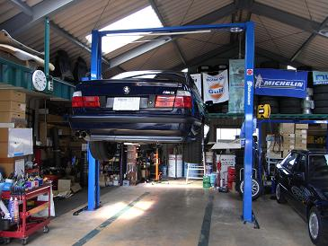
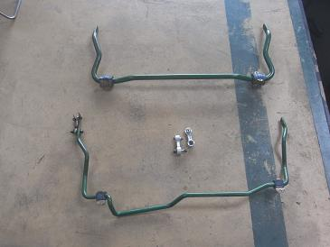
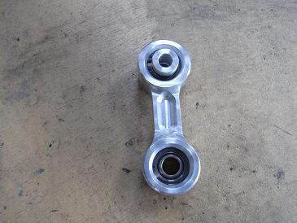
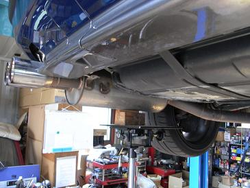
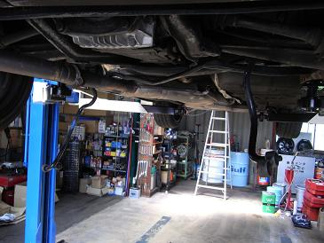
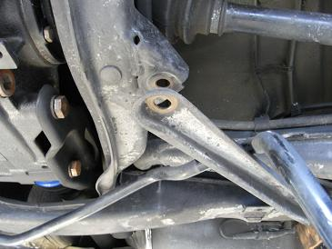
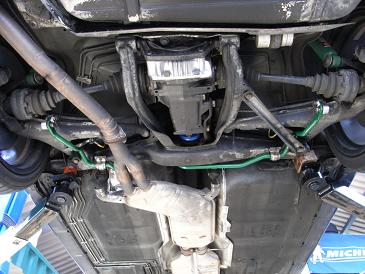
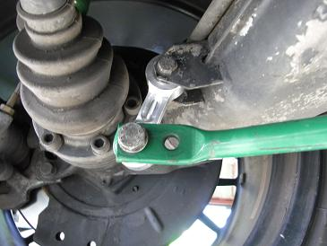
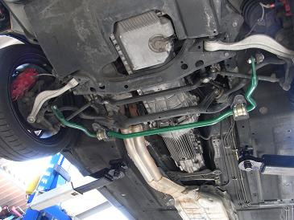
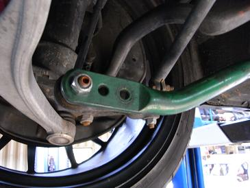

 リフト使用プランで１時間2000円なのだ。 ここは、メインは自動車販売なのだが、レンタルガレージとしても利用できる。 在庫にある車が80～90年代の車がメインなので見ているだけでも楽しい。 屋根もあるし、扇風機もあってベストな環境だ。
|
  交換するスタビライザー フロントが27mm リヤが19mm 効きを調節できるよう、リンクを取り付ける部分に穴が数箇所あいている。 写真右は、リヤのスタビリンクをピロ化するために特注したものだ。E34はリヤのスタピリンクが劣化しやすく、ここがヤレて くると極端にリヤが落ちつかなくなる。 もしかしたら、純正のスタビにも使えるかも？
|
 せっかくレンタルガレージでのメンテなので、ついでにO2センサーとデフオイルも交換する予定なのだ。 O2センサーの交換もあるし、スタビの取り外しスペースを確保するためマフラーを少し下げたところ。
|
  とりあえず、スタビリンクを車体から外して。。スタビが垂れ下がったところ。 これだけでは外せないので、ピットマンアームから伸びるフレームのボルト＆ナット（18mm）を外す。 特に知恵の輪のように悩むことなく外せる。
|
  スタビライザーのブッシュにシリコングリスを塗って、、ナットを締めて、、スタビリンクを取り付ければ完成。 30分もあれば交換できる。
|
  フロントは見たまま、ブッシュをとめている13mmのナットを４つ外して、、スタビリンクをスタビライザーと切り離す。 その逆の手順で取り付ける。 調整穴が３つあるが、今回は様子見で最弱のポイントで取り付けた。（JGさんゴンザレスさんゴメンナサイ（笑）） そのうちMAXも試してみようと思う。 走った一番の感想としては、ゴーカートか？と思うぐらいハンドリングが機敏になった。 「ガチガチになったら嫌だなー」なんて思っていたが、そんなことはなく、むしろ元々装着していたM５のスタビより細かいピッチングは少ない。かなりの剛性があるのが分かるのだが、その中に「しなやかさ」があるのだ。 こりゃ飛ばしたくなる気持ちがわかります＾＾； 近いうちに残りのO2センサーとデフオイル交換のレポートもUPの予定です。
|